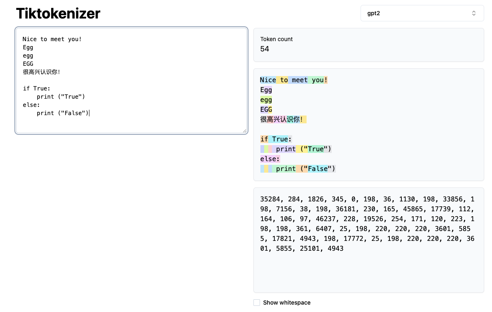
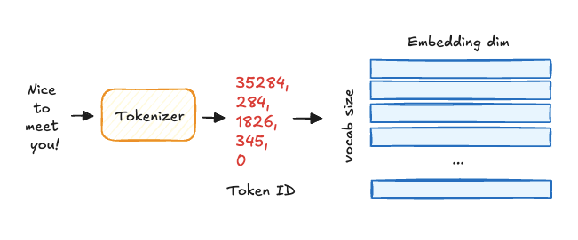
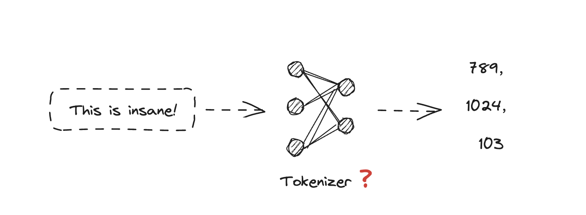

Build your own tokenizer in LLM
Tokenization对于基于Transformer的大语言模型来说至关重要。由于物理硬件的限制，大语言模型只能理解binary类型的数据，所以tokenizer充当着字符串string到integer的翻译工具。但是tokenizer并非只是保存着字符与数字的映射这么简单。这篇文章是对自己学习tokenizer过程的一个总结，参考Andrej Karpathy的视频"Let's build the GPT tokenizer", but in c++ version。
What is Tokenizer?
第一个问题就是什么是Tokenizer？Token在英文中表达的是标记、代币、记号等等意思，我们在这里可以简单的理解为一个符号的表示。在自然语言处理的领域中，token即符号转化成的那个整数。Tokenizer以及Tokenization就很好理解了：Tokenization表达的就是将符号转化成整数的过程，而Tokenizer就是执行这一转化的工具，可以翻译为分词器。
下图是来自Tiktokenizer网站的一个截图，可以直观感受一下Tokenizer的作用。

图中同一个颜色的长方形框出的字符属于一个token，对应下方的一个整数。从图中可以获取很多信息：
- Tokenizer不是简单的将单词转化为数字，也不是一个单词会对应一个数字，会出现一个单词拆分为多个token的情况
- 对于意义相同的单词，撰写形式不同，会被解析成不同的若干token，比如Egg解析为一个token，EGG解析为两个token。这就意味着，在LLM的视角里，Egg和EGG其实是两个东西
- 中文和英文，意义相同的两句话，中文被解析的token数量更多。这就说明，在同一个模型下，由于模型上下文token长度的限制，在英文的表现会更好，因为英文token会有更多的上下文语境
- 对于gpt2的tokenizer来说，由于代码中包含有大量空格，且空格均被分解成一个个token，这就会导致模型接受很多无意义的输入。由于模型上下文token长度的限制，这个解析方式势必会影响模型在写代码方面的性能，这也是gpt4的tokenizer之后的优化方向，目的是把空格琐碎的多token用更少的token表示
从上面的分析可知，tokenization是transformer大语言模型中非常重要的一个组成部分。Token是LLM计算的最小单元，也是LLM看待自然语言的一种视角。下图简单描述了字符串到transformer的输入转换的流程。首先字符串"Nice to meet you！"经过tokenizer得到对应的token，这里的整数实际上代表的就是embedding table的索引。根据此索引，每一个token就会得到对应的蓝色的向量表示，之后会作为vector输入transformer中。

Unicode
Unicode是一种全球通用的字符编号系统，每一个字符（文字、符号、emoji）都对应一个唯一的编号。这天然的符合我们对tokenizer的需求，那我们为什么不直接用Unicode作为编码的结果，反而还要再想办法研究新的算法呢？这是因为它有两个主要的弊端：
- 从官方数据来看，目前Unicode统计了大约15w个字符，这就意味着转化后的token id的数量为15w，对应embedding table也需要有15w个vector，非常巨大。同时，Unicode只是对单个字符做tokenize，这样一个"Nice to meet you！"就会包含17个token，和之前的gpt2的5个token来比，会耗费大量语言模型的上下文长度，导致模型不能关注到更大范围的文本，进而使模型的成本升高，性能下降。
- 由于Unicode的标准一直在变，采用此方式不是很稳定
这里标记一个讲解Unicode和utf编码的博客A programmer's Introduction to Unicode。
Training a Tokenizer
前面提到Unicode的弊端之一，就是15w个vector的数量过于庞大了。因此Tokenizer算法的一个目标就是优化token表示的数量，即尽可能的压缩信息。体现在算法上就是会有很多字符组合在一起表示一个token。那么问题就是这个多个字符组合在一起表示的token集合怎么来呢？这里很容易想到一个思想，统计。比如，给定一个词集，里面包含了若干词，我们对词频进行统计，频率超过一定阈值则纳入token集合。这一过程实际上就指得是training a tokenizer。
第一次听到training这个词，我的第一反应是：Tokenizer 不就是一个用 Python 写的函数嘛，怎么还能“训练”？这是网络模型还是什么？

答案是：不是。
实际上，“训练 tokenizer”只是一个说法，人们称之为“训练”是因为听起来比较高大上。但 tokenizer 的“训练”方式取决于所用的分词算法。举个例子：以子词（subword）分词算法为例，为了识别哪些子词最常出现、最有意义，tokenizer 需要通读整个语料库。这一分析过程就被称作“训练”。
模型训练使用的是随机梯度下降（SGD），通过每个 batch 减少 loss，这个过程是随机的（因此需要设置随机种子才能复现结果）。而 tokenizer 的训练是一个统计过程，它尝试找出最优的子词组合，选择规则依赖于算法。这是一个确定性过程：只要算法和语料相同，每次训练结果都一样。
Byte-Pair Encoding tokenization - BPE
BPE 最初是数据压缩算法（1994 年 Philip Gage），后来被用于神经网络中作为 tokenizer。它的核心思想很直接：
不断把“最常出现的相邻符号对”合并成一个新符号，直到词表大小达到设定阈值。
Byte-Pair Encoding一般分为两个比较重要的阶段，训练阶段以及推理阶段。对于训练阶段主要做的任务就是遍历词表，根据BPE的算法总结出若干条规则。推理阶段就可以读取对应训练好的文件，然后去文件中查询符合的规则，将其替代为对应的token id。上面说的还是过于抽象，下面可以通过一个具体的例子来了解BPE算法的主要思想。
把整个流程拆开来看，能分成 训练 tokenizer → encode → decode 三步。
训练 Tokenizer
Tokenizer 在开始训练 BPE 规则前要先做两件事：
- 文本归一化：统一大小写、全角半角、去掉不可见符号等
- 预分词：按空格、标点或字节把文本先切一刀，避免跨词合并
接下来我们开始建立初始频次词典和字符表，假设语料只有两句（为了演示简洁）：
This is insane!
This is impossible# 词频字典（以空格分词）
{"This": 2, "is": 2, "insane": 1, "impossible": 1}
# 字符级词表（Vocabulary）——所有出现过的单字符
{'T', 'h', 'i', 's', 'n', 'a', 'e', 'm', 'p', 'o', 'b', 'l'}注意：字符表里没有感叹号
!，因为我们在预分词里把标点单独拆出并忽略了。
接下来我们把单词离散成
字符序列，为了后续“找相邻字符对”，需要把每个词拆成单字符并在词尾加
终止符 </w>（或 GPT-2 的
Ġ、SentencePiece 的 ▁）。
{'T' 'h' 'i' 's' </w>: 2,
'i' 's' </w>: 2,
'i' 'n' 's' 'a' 'n' 'e' </w>: 1,
'i' 'm' 'p' 'o' 's' 's' 'i' 'b' 'l' 'e' </w>: 1}进一步，我们需要迭代寻找最高频相邻对并合并。
BPE 的核心： 重复找到出现次数最多的相邻符号对 (a, b)，新建合成符号 “ab”，再把语料里所有 (a, b) 替换为 “ab”。
第 1 次合并： 首先统计所有相邻字符对出现次数
，其中i s 出现 4 次，是最高频 的组合；将
i s 合并为新符号 is
，然后更新字符表与语料，得到如下字符集合：
# 新增符号
token_set += {'is'}
# 更新后的离散表示（只展示变化部分）
{'T' 'h' 'is' </w>: 2,
'is' </w>: 2,
'is' 'a' 'n' 'e' </w>: 1,
'is' 'p' 'o' 's' 's' 'i' 'b' 'l' 'e' </w>: 1}并把本次“合并规则”记录下来，Tokenizer
训练到最后会保存一张有序合并表（merge
list）。推理阶段就是反复按它的顺序去匹配文本。接着我们继续重复合并动作：再次扫描，找下一高频对（也许是
Th、is</w>、im……）
，不断循环，直到 ：
- 达到设定的词表大小上限（例如 30 000）
- 或者下一个最高频对出现次数已低于阈值，继续合并收益不大
训练结束时我们拥有：
- 最终词表：包括 所有初始单字符 ，所有通过合并学到的多字符子词
- 合并规则列表：有序，推理时必须自上而下照此尝试匹配，否则可能切出不同结果。
Encode
在预训练阶段，BPE（Byte‑Pair Encoding）通过不断合并出现频次最高的相邻子串，生成一张有序的合并规则表（merge table）和一份 token 词表（vocabulary）。推理或部署时，Encode 阶段的任务就是按照这两张“经验表”把原始文本映射成模型可读的 token ID 序列。
首先对输入进行 Unicode 归一化，顺便统一大小写、去掉零宽字符、处理全角半角差异等。这样可以保证同义字符被视为同一个 code point，从源头消除歧义。规范化后的字符串按字符拆分得到一串 Unicode code point。此时每个字符都可以看作“最细粒度的 token”。
接着对每个 code point 查询「字符 → token ID」哈希表：
- 若命中，直接把对应 token ID 加入序列；
- 若未命中，则按回退策略降级到字节级拆分（UTF‑8 字节对照表），确保所有字符都有落点。
接下来进入核心循环：
- 读取已排序的 merge table；
- 扫描当前 token 序列，记录所有相邻 token 对及其在 merge table 中的优先级索引；
- 选择优先级最高（索引最小）的可合并对，若不存在则退出循环；
- 把该对替换为新 token ID，并只在合并点附近更新相邻对，避免全量重扫；
- 重复步骤 2‑4，直到再也找不到可合并项。
在工程实现里，常见优化包括：用链表存 token、用最小堆维护「当前最小优先级对」，或采用双端队列减少指针更新；HuggingFace 的 Tokenizers 库就采纳了这种思路。优化对于BPE算法的效率至关重要，这在我们之后的实现中会有所体现。
循环结束后得到最终 token ID 序列，直接送入模型即可。如果需要解码，只需按「token ID → 子串」的逆映射顺序拼回字符，再做一次反规范化。
Decode
解码的过程就相对简单，只需要维护一个token到字符的映射哈希表，遍历输入的token序列，在哈希表中找到对应的字符之后拼接到最终的字符串中返回即可。
Implement BPE
为了彻底了解整个编码解码的流程，以及为自己之后写一个简单的大模型推理框架做铺垫，参考Karapthy的实现，用C++和google test重新实现了一次BPE Tokenizer，同时采用上述的工程优化方法优化原始的encode流程。
首先我们需要关注的就是如何抽象一个tokenizer。因为推理框架无需考虑训练，因此对于tokenizer来说，核心的方法只需要包含三个操作：load、encode以及decode。考虑到代码的可扩展性，我们可以开辟一个简单的基类：
class Tokenizer {
public:
virtual auto load() -> bool = 0;
virtual void encode(const std::string& text, std::vector<int> & ids) = 0;
virtual void decode(const std::vector<int>& ids, std::string& text) = 0;
};为了能够验证自己算法的正确性，我这里在Tokenizer的基础上封装了sentencepiece的实现，方便后续的对比，统一Tokenizer的使用流程。
class SentencePieceTokenizer : public Tokenizer {
private:
sentencepiece::SentencePieceProcessor processor_;
std::string model_path_;
public:
SentencePieceTokenizer(const std::string& model_path);
virtual ~SentencePieceTokenizer();
auto load() ->bool override;
void encode(const std::string& text, std::vector<int> & ids) override;
void decode(const std::vector<int>& ids, std::string& text) override;
};具体的实现也非常简单，根据sentencepiece的官方文档做一个简单调用即可：
SentencePieceTokenizer::SentencePieceTokenizer(const std::string& model_path) : model_path_(model_path) {}
SentencePieceTokenizer::~SentencePieceTokenizer() {}
auto SentencePieceTokenizer::load() -> bool {
const auto status = processor_.Load(model_path_);
if (!status.ok()) {
std::cerr << status.ToString() << std::endl;
return false;
}
return true;
}
void SentencePieceTokenizer::encode(const std::string& text, std::vector<int> &ids) {
processor_.Encode(text, &ids);
}
void SentencePieceTokenizer::decode(const std::vector<int>& ids, std::string& text) {
processor_.Decode(ids, &text);
}接下来，我们就可以真正开始实现自己的tokenizer了。我们还是继承基础类Tokenizer的抽象，实现其最核心的三个方法，我们先来关注最naive的实现，这种实现的性能比较低，后续会在此基础上进行优化。
class LlamaTokenizer : public Tokenizer {
private:
std::string model_path_;
int vocab_size_{0};
unsigned int max_token_length_;
std::vector<float> scores_;
std::unordered_map<int, std::string> vocab_decoder_; // token id to string
std::unordered_map<std::string, int> vocab_encoder_; // string to token id
unsigned char byte_pieces_[512]; // for reverse byte fallback case
public:
LlamaTokenizer(const std::string& model_path);
LlamaTokenizer(const std::string& model_path, int vocab_size);
virtual ~LlamaTokenizer();
auto load() ->bool override;
void encode_naive(const std::string& text, std::vector<int> & ids);
void encode_opt(const std::string& text, std::vector<int> & ids);
void encode(const std::string& text, std::vector<int> & ids) override;
void decode(const std::vector<int>& ids, std::string& text) override;
};第一个参数model_path存储的是tokenizer.bin的路径（注意这里的tokenizer.bin是由tokenizer.model转化而来，使用的是karpathy的llama2.c项目中的tokenizer.py进行导出。这个文件重新组织了一个tokenizer.model文件的信息)。tokenizer.bin文件的存储格式如下：
首先文件开头存储了这个词表中token最大的长度。 接下来所有的token都按照<float:score|int:len|token>的格式存储。开头的前三个存储了特殊的token: unk s以及/s，接下来的256个token存储的是<0x00>到<0xFF>的原始数据，这是为了处理byte fallback情况而预留的token。
Byte fallback：
以llama的tokenizer举例，去tokenize”独“的时候，它是没有直接对应的词表的。同时因为汉子基本以三个字节编码，这里就直接把三个字节对应到数字，把数字作为其编码即可。
raw text: 独
encoded text: [ 29871 234 142 175 ] (29871代表的是句子开头编码阶段加入的空格)
第二个参数是用户输入时指定的，在加载tokenizer时会根据这个参数限制加载token的数量。
两个哈希表分别存储了从token id到字符以及字符到token id的对应关系。
最后一个byte_pieces处理的是解码阶段，具体在实现decode函数时详细说明。
基于以上的基础知识，我们已经可以实现tokenizer的load函数了:
auto LlamaTokenizer::load() -> bool {
std::ifstream file(model_path_,std::ios::binary);
if (!file) {
std::cerr << "Couldn't open file " << model_path_ << '\n';
}
// for reverse byte fallback cases like "<0x9F>" is just a string
for (size_t i = 0; i < 256; i++) {
byte_pieces_[i * 2] = static_cast<unsigned char>(i);
byte_pieces_[i * 2 + 1] = '\0';
}
file.read(reinterpret_cast<char*>(&max_token_length_), sizeof(int));
scores_.resize(vocab_size_);
int len = 0;
for (int i = 0; i < vocab_size_; i++) {
file.read(reinterpret_cast<char*>(&scores_[i]), sizeof(float));
file.read(reinterpret_cast<char*>(&len), sizeof(int));
std::unique_ptr<char[]> token = std::make_unique<char[]>(len+1);
file.read(token.get(), len);
token[len] = '\0';
vocab_decoder_[i] = std::string(token.get());
vocab_encoder_[std::string(token.get(), len)] = i;
}
file.close();
return true;
}进一步，我们可以根据之前的对编码部分的流程，实现encode方法。
void LlamaTokenizer::encode_naive(const std::string& text, std::vector<int> &ids) {
// we have vocab_encoder_ and vocab_decoder_ now
// given the input text, we need first split every text into single string and try to find the first round of token ids
// character like '汉' need use at least three bytes to encode, follow the UTF8 coding rule
// Code point ↔ UTF-8 conversion
// First code point Last code point Byte 1 Byte 2 Byte 3 Byte 4
// U+0000 U+007F 0xxxxxxx
// U+0080 U+07FF 110xxxxx 10xxxxxx
// U+0800 U+FFFF 1110xxxx 10xxxxxx 10xxxxxx
// U+10000 U+10FFFF 11110xxx 10xxxxxx 10xxxxxx 10xxxxxx
// so here we actually perform a simple aggregation of bytes into UTF8, and then query the encoder to get token id
// 0x80 -> 1000 0000
// 0xC0 -> 1100 0000
std::string buf;
buf.resize(4);
size_t ptr = 0;
// add_dummy_prefix is true by default
// so prepend a dummy prefix token to the input string, but only if text != ""
// TODO: pretty sure this isn't correct in the general case but I don't have the
// energy to read more of the sentencepiece code to figure out what it's doing
if (text[0] != '\0') {
auto it = vocab_encoder_.find(" ");
ids.push_back(it->second);
}
for (const char* c = text.c_str(); *c != '\0'; c++) {
// as can be seen in UTF-8 table, a byte start with 10..... means coninuation byte of the code points
// a byte start with 0..... is ASCII
// a byte start with 11..... is begining byte of the code points
// so we can perform & to filter
if ((*c & 0xC0) != 0x80) {
// this means *c contains a byte that is none coninuation byte
// so we reset ptr to 0
ptr = 0;
}
buf[ptr++] = *c;
if ((*(c+1) & 0xC0) == 0x80) {
continue;
}
std::string codepoint(buf.data(), ptr); // now we get the codepoint data
auto it = vocab_encoder_.find(codepoint);
if (it == vocab_encoder_.end()) {
// can find, byte fall back
for (size_t i = 0; i < ptr; i++) {
ids.push_back((unsigned char)buf[i]+3);
}
} else {
ids.push_back(it->second);
}
ptr = 0;
}
// compact surviving tokens
while (1) {
float max_score = -1e10;
int max_index = -1;
int max_token_id = -1;
for (size_t i = 0; i < ids.size() - 1; i++) {
auto first_it = vocab_decoder_.find(ids[i]);
auto second_it = vocab_decoder_.find(ids[i+1]);
if (first_it == vocab_decoder_.end() || second_it == vocab_decoder_.end()) {
std::cerr << "cannot find token " << std::endl;
continue;
}
std::string str = first_it->second + second_it->second;
auto merge_it = vocab_encoder_.find(str);
if (merge_it != vocab_encoder_.end() && scores_[merge_it->second] > max_score) {
max_score = scores_[merge_it->second];
max_index = i;
max_token_id = merge_it->second;
}
}
if (max_index == -1) {
break;
}
ids[max_index] = max_token_id;
ids.erase(ids.begin()+max_index+1);
}
}代码分为两个主要部分，首先我们需要把输入的text转化为字符粒度的UTF-8编码。代码注释中标注了UTF-8编码的code point对应关系。可以看到不同的符号对应的长度是不一样的，因此我们需要根据其编码特性，正确的区分当前字符是1个字节的code point还是n个字节的code point。具体的方式就是通过位运算来过滤，可以仔细阅读注释部分好好体会一下。读取到一个完整的code point之后，我们就可以查询其是否存在对应的token，如果存在，则存储对应的token id到全局的token序列中，如果不存在，执行byte fallback，存储原始的UTF-8序列。
在得到初始的token序列之后，就可以根据BPE算法的逻辑，遍历词表，找到score最高的组合进行合并。代码的实现是一个最朴素的遍历版本。
在实现的过程中，其实是有很多corner case的，这里我才用的方法就是使用google test写一些测试，与之前实现的标准的sentencepiece tokenizer执行结果进行比对。在调试中逐步完善实现以及加深自己的理解：
TEST(ENCODE_TEST, space_token_test) {
std::string TOKENIZER_MODEL_PAHT = "./tokenizer.bin";
llama::LlamaTokenizer tokenizer(TOKENIZER_MODEL_PAHT, 32000);
EXPECT_EQ(tokenizer.load(), true);
// load sentencepiece tokenizer as ground truth
std::string SPM_TOKENIZER_MODEL_PAHT = "./tokenizer.model";
llama::SentencePieceTokenizer spm_tokenizer(SPM_TOKENIZER_MODEL_PAHT);
EXPECT_EQ(spm_tokenizer.load(), true);
std::string text = " ";
std::vector<int> ids;
tokenizer.encode(text, ids);
std::vector<int> gt_ids;
spm_tokenizer.encode(text, gt_ids);
EXPECT_EQ(ids.size(), gt_ids.size());
for (size_t i = 0; i < ids.size(); i++) {
EXPECT_EQ(ids[i], gt_ids[i]);
}
}
TEST(ENCODE_TEST, chinese_token_test) {
std::string TOKENIZER_MODEL_PAHT = "./tokenizer.bin";
llama::LlamaTokenizer tokenizer(TOKENIZER_MODEL_PAHT, 32000);
EXPECT_EQ(tokenizer.load(), true);
// load sentencepiece tokenizer as ground truth
std::string SPM_TOKENIZER_MODEL_PAHT = "./tokenizer.model";
llama::SentencePieceTokenizer spm_tokenizer(SPM_TOKENIZER_MODEL_PAHT);
EXPECT_EQ(spm_tokenizer.load(), true);
std::string text = "汉武帝飞向了浩瀚无穷的宇宙！";
std::vector<int> ids;
tokenizer.encode(text, ids);
std::vector<int> gt_ids;
spm_tokenizer.encode(text, gt_ids);
EXPECT_EQ(ids.size(), gt_ids.size());
for (size_t i = 0; i < ids.size(); i++) {
EXPECT_EQ(ids[i], gt_ids[i]);
}
}
TEST(ENCODE_TEST, emoji_token_test) {
std::string TOKENIZER_MODEL_PAHT = "./tokenizer.bin";
llama::LlamaTokenizer tokenizer(TOKENIZER_MODEL_PAHT, 32000);
EXPECT_EQ(tokenizer.load(), true);
// load sentencepiece tokenizer as ground truth
std::string SPM_TOKENIZER_MODEL_PAHT = "./tokenizer.model";
llama::SentencePieceTokenizer spm_tokenizer(SPM_TOKENIZER_MODEL_PAHT);
EXPECT_EQ(spm_tokenizer.load(), true);
std::string text = "😀 😃 😂 🤔 😍 🦄 🐉 🦾 🚀 🧠";
std::vector<int> ids;
tokenizer.encode(text, ids);
std::vector<int> gt_ids;
spm_tokenizer.encode(text, gt_ids);
EXPECT_EQ(ids.size(), gt_ids.size());
for (size_t i = 0; i < ids.size(); i++) {
EXPECT_EQ(ids[i], gt_ids[i]);
}
}
TEST(ENCODE_TEST, chinese_emoji_token_test) {
std::string TOKENIZER_MODEL_PAHT = "./tokenizer.bin";
llama::LlamaTokenizer tokenizer(TOKENIZER_MODEL_PAHT, 32000);
EXPECT_EQ(tokenizer.load(), true);
// load sentencepiece tokenizer as ground truth
std::string SPM_TOKENIZER_MODEL_PAHT = "./tokenizer.model";
llama::SentencePieceTokenizer spm_tokenizer(SPM_TOKENIZER_MODEL_PAHT);
EXPECT_EQ(spm_tokenizer.load(), true);
std::string text = "汉武帝飞🚀向了浩瀚无穷的宇宙 😍 🦄 🐉 ";
std::vector<int> ids;
tokenizer.encode(text, ids);
std::vector<int> gt_ids;
spm_tokenizer.encode(text, gt_ids);
EXPECT_EQ(ids.size(), gt_ids.size());
for (size_t i = 0; i < ids.size(); i++) {
EXPECT_EQ(ids[i], gt_ids[i]);
}
}decode的代码就很直观，直接查询vocab
decoder然后输出对应的text拼接起来即可。
void LlamaTokenizer::decode(const std::vector<int>& ids, std::string& text) {
// decoding is a reverse process compared with encoding
for (size_t i = 0; i < ids.size(); i++) {
auto it = vocab_decoder_.find(ids[i]);
if (it == vocab_decoder_.end()) {
std::cerr << "cannot find token " << std::endl;
continue;
}
if (it->second[0] == ' ') {
text += it->second.substr(1);
} else {
text += it->second;
}
}
}但是这个代码会有一个问题，比如如下的测试中：
TEST(DECODE_TEST, chinese_emoji_token_test) {
std::string TOKENIZER_MODEL_PAHT = "/Users/drcooper/Developer/LLM/MiniLlama/tools/tokenizer.bin";
llama::LlamaTokenizer tokenizer(TOKENIZER_MODEL_PAHT, 32000);
EXPECT_EQ(tokenizer.load(), true);
// load sentencepiece tokenizer as ground truth
std::string SPM_TOKENIZER_MODEL_PAHT = "/Users/drcooper/Developer/LLM/MiniLlama/tools/tokenizer.model";
llama::SentencePieceTokenizer spm_tokenizer(SPM_TOKENIZER_MODEL_PAHT);
EXPECT_EQ(spm_tokenizer.load(), true);
std::string text = "汉武帝飞🚀向了浩瀚无穷的宇宙 😍 🦄 🐉 ";
std::vector<int> ids;
tokenizer.encode(text, ids);
std::vector<int> gt_ids;
spm_tokenizer.encode(text, gt_ids);
EXPECT_EQ(ids.size(), gt_ids.size());
for (size_t i = 0; i < ids.size(); i++) {
EXPECT_EQ(ids[i], gt_ids[i]);
}
std::string out_text;
std::string gt_out_text;
tokenizer.decode(ids, out_text);
spm_tokenizer.decode(gt_ids, gt_out_text);
EXPECT_EQ(out_text, gt_out_text);
}此时我们自己写好的解析器是有问题的，问题的根源就在当我们build tokenizer时，1-255的ASCII码的编码是以<0x9F>这种格式作为字符串处理的，输出就会导致：
Expected equality of these values:
out_text
Which is: "\xE6\xB1\x89\xE6\xAD\xA6\xE5\xB8\x9D<0xE9><0xA3><0x9E><0xF0><0x9F><0x9A><0x80>\xE5\x90\x91\xE4\xBA\x86<0xE6><0xB5><0xA9><0xE7><0x80><0x9A>\xE6\x97\xA0<0xE7><0xA9><0xB7>\xE7\x9A\x84\xE5\xAE\x87<0xE5><0xAE><0x99><0xF0><0x9F><0x98><0x8D><0xF0><0x9F><0xA6><0x84><0xF0><0x9F><0x90><0x89> "
As Text: "汉武帝<0xE9><0xA3><0x9E><0xF0><0x9F><0x9A><0x80>向了<0xE6><0xB5><0xA9><0xE7><0x80><0x9A>无<0xE7><0xA9><0xB7>的宇<0xE5><0xAE><0x99><0xF0><0x9F><0x98><0x8D><0xF0><0x9F><0xA6><0x84><0xF0><0x9F><0x90><0x89> "
gt_out_text
Which is: "\xE6\xB1\x89\xE6\xAD\xA6\xE5\xB8\x9D\xE9\xA3\x9E\xF0\x9F\x9A\x80\xE5\x90\x91\xE4\xBA\x86\xE6\xB5\xA9\xE7\x80\x9A\xE6\x97\xA0\xE7\xA9\xB7\xE7\x9A\x84\xE5\xAE\x87\xE5\xAE\x99 \xF0\x9F\x98\x8D \xF0\x9F\xA6\x84 \xF0\x9F\x90\x89 "
As Text: "汉武帝飞🚀向了浩瀚无穷的宇宙 😍 🦄 🐉 "为了解决这个问题，我们需要将字符串<0x9F>做一个转换。这就用到了我们之前提到的byte_pieces。这里其实做的就是把<0x9F>转化为0x9F。
因此修正后的实现如下：
void LlamaTokenizer::decode(const std::vector<int>& ids, std::string& text) {
// decoding is a reverse process compared with encoding
bool first_token = true;
for (size_t i = 0; i < ids.size(); i++) {
auto it = vocab_decoder_.find(ids[i]);
if (it == vocab_decoder_.end()) {
std::cerr << "cannot find token " << std::endl;
continue;
}
std::string piece = it->second;
if (first_token && piece[0] == ' ') {
piece = piece.substr(1);
}
first_token = false;
unsigned char byte_val;
if (sscanf(piece.c_str(), "<0x%02hhX>", &byte_val) == 1) {
piece = (char*)byte_pieces_ + byte_val * 2;
}
text += piece;
}
}Optimization
至此，naive版本的Tokenizer实现完成。很自然的，相比较一下自己实现的算法效率和sentencepiece实现的效率有多少差距。因此我们可以模拟生成一个很长的text，输入给不同的tokenizer实现中，测试执行的时间。
// performance test
std::string make_long_text(size_t repeat = 1024) {
std::string sample = "汉武帝飞🚀向了浩瀚无穷的宇宙 😍 🦄 🐉 [INST] Hello, 世界！🤔\r\n";
std::string out;
for (size_t i = 0; i < repeat; ++i) out += sample;
return out;
}
template<typename F>
double bench(F func, int rounds = 3) {
double best = 1e30;
for (int i = 0; i < rounds; ++i) {
auto t0 = std::chrono::high_resolution_clock::now();
func();
auto t1 = std::chrono::high_resolution_clock::now();
double ms = std::chrono::duration<double, std::milli>(t1 - t0).count();
if (ms < best) best = ms;
}
return best;
}
TEST(BENCHMARK_TOKENIZER, encode_decode_throughput) {
std::string TOKENIZER_MODEL_PATH = "/Users/drcooper/Developer/LLM/MiniLlama/tools/tokenizer.bin";
std::string SPM_TOKENIZER_MODEL_PATH = "/Users/drcooper/Developer/LLM/MiniLlama/tools/tokenizer.model";
LlamaTokenizer llama_tokenizer(TOKENIZER_MODEL_PATH, 32000);
ASSERT_TRUE(llama_tokenizer.load());
SentencePieceTokenizer spm_tokenizer(SPM_TOKENIZER_MODEL_PATH);
ASSERT_TRUE(spm_tokenizer.load());
std::string text = make_long_text(100);
std::vector<int> ids, spm_ids;
std::string decoded, spm_decoded;
// Llama encode benchmark
double llama_encode_times = bench([&]() {
ids.clear();
llama_tokenizer.encode_naive(text, ids);
});
std::cout << "llama encode naive best: " << llama_encode_times << " ms" << std::endl;
// SPM encode benchmark
double spm_encode_time = bench([&]() {
spm_ids.clear();
spm_tokenizer.encode(text, spm_ids);
});
std::cout << "spm encode best: " << spm_encode_time << " ms" << std::endl;
// Decode
double llama_decode_time = bench([&]() {
decoded.clear();
llama_tokenizer.decode(ids, decoded);
});
std::cout << "llama decode best: " << llama_decode_time << " ms" << std::endl;
double spm_decode_time = bench([&]() {
spm_decoded.clear();
spm_tokenizer.decode(spm_ids, spm_decoded);
});
std::cout << "spm decode best: " << spm_decode_time << " ms" << std::endl;
// 校验一致性
EXPECT_EQ(ids.size(), spm_ids.size());
EXPECT_EQ(decoded, spm_decoded);
}测试结果：
llama encode naive best: 5387.24 ms
spm encode best: 2.93758 ms
llama decode best: 1.091 ms
spm decode best: 2.82479 ms解码得益于提前构建好的哈希表，比sentencepiece的实现要快一倍。但是编码部分一言难尽，慢了2500倍。可见这里的优化还是有很大空间的。
那我们实现的代码慢在哪里呢？我最先想到的是代码中涉及到大量string的创建和销毁，相比于采用char字节的方式，对象的构建还是比较耗时的，为此我修改了string的逻辑，但发现收效甚微，编码仍然维持在5300ms左右。可见这不是主要的瓶颈。
分析代码，encode包含主要两个部分，UTF-8编码部分和BPE合并部分。我分别对这两部分的代码做了时间统计，发现BPE合并部分的代码耗时占据总体编码耗时的98%。所以问题显而易见，我们实现的合并代码时间复杂度太高了。引用这篇博客的分析，我们实现的代码实现复杂度为std::vector::erase 还会触发整段内存移动。
为了优化这部分逻辑，可以采用双向链表结构配合最大堆（std::priority_queue）。通过维护
prev 和 next数组模拟链表结构，删除 token
仅需更新索引，而不再触发内存搬移。与此同时，把所有可合并的 token
对及其分数一次性压入堆中，保证堆顶始终是当前分数最高的候选对。
合并过程由此简化为：从堆顶弹出一对 → 检查是否仍然有效 →
若有效则执行合并、更新 alive 状态 →
仅对合并点左右两条新邻接边重新计算分数并入堆。由于我们采用 lazy
deletion
策略（即节点失活后不立即删除堆中对应记录，而是在使用时再验证），因此
pop 出来的记录可能早已失效，需要做有效性检查。
举个例子：
初始序列: a b c d
初始堆: (a,b,0.9), (b,c,0.8), (c,d,0.7)第一轮合并 (a,b) 得到 ab：
序列: ab c d
堆中仍有: (b,c), (c,d)，但 (b,c) 的左边 b 已不再有效当我们再次 pop 出 (b,c) 时，发现 b
已经不存在，因此这条记录无效，直接跳过。接下来 pop 出
(c,d)，如果 c 和 d 仍然“活着”，则可以继续合并。
这种懒惰删除策略避免了在每一次合并时都同步更新堆内容的额外成本，在时间复杂度上维持在 O(N log N)，实现上也更加简洁。
不过，还有一种更隐蔽的问题也必须处理：即 left/right 虽然都还活着，但拼接后的新 token 实际对应的 ID 与当前堆记录中保存的不一致。举个例子：
词表: "ab"→20, "bc"→30, "abc"→50
初始序列: a b c
堆中记录: (a,b)→20, (b,c)→30合并 (a,b) 得到 ab，序列变成 ab c。此时再处理 (b,c) 时，left 实际指向 "ab"，right 仍是 "c"，拼接后是 "abc"，在词表中对应的是 50，而不是原先记录的 30：
chk = vocab_encoder_("ab"+"c") = 50
m.merged_token_id = 30由于 50 ≠ 30，这说明这条记录也是“过期”的，应跳过不处理。
所以我们的检查逻辑是：如果当前记录对应的 pair 拼接后查不到，或查到了但 token ID 和堆里存的不一致，就认为这条记录已无效：
if (chk == vocab_encoder_.end() || chk->second != m.merged_token_id) continue;最后优化后的代码为：
void LlamaTokenizer::encode(const std::string& text, std::vector<int> &ids) {
// we have vocab_encoder_ and vocab_decoder_ now
// given the input text, we need first split every text into single string and try to find the first round of token ids
// character like '汉' need use at least three bytes to encode, follow the UTF8 coding rule
// Code point ↔ UTF-8 conversion
// First code point Last code point Byte 1 Byte 2 Byte 3 Byte 4
// U+0000 U+007F 0xxxxxxx
// U+0080 U+07FF 110xxxxx 10xxxxxx
// U+0800 U+FFFF 1110xxxx 10xxxxxx 10xxxxxx
// U+10000 U+10FFFF 11110xxx 10xxxxxx 10xxxxxx 10xxxxxx
// so here we actually perform a simple aggregation of bytes into UTF8, and then query the encoder to get token id
// 0x80 -> 1000 0000
// 0xC0 -> 1100 0000
std::string buf;
buf.resize(4);
size_t ptr = 0;
// add_dummy_prefix is true by default
// so prepend a dummy prefix token to the input string, but only if text != ""
// TODO: pretty sure this isn't correct in the general case but I don't have the
// energy to read more of the sentencepiece code to figure out what it's doing
if (text[0] != '\0') {
auto it = vocab_encoder_.find(" ");
ids.push_back(it->second);
}
for (const char* c = text.c_str(); *c != '\0'; c++) {
// as can be seen in UTF-8 table, a byte start with 10..... means coninuation byte of the code points
// a byte start with 0..... is ASCII
// a byte start with 11..... is begining byte of the code points
// so we can perform & to filter
if ((*c & 0xC0) != 0x80) {
// this means *c contains a byte that is none coninuation byte
// so we reset ptr to 0
ptr = 0;
}
buf[ptr++] = *c;
if ((*(c+1) & 0xC0) == 0x80) {
continue;
}
std::string codepoint(buf.data(), ptr); // now we get the codepoint data
auto it = vocab_encoder_.find(codepoint);
if (it == vocab_encoder_.end()) {
// can find, byte fall back
for (size_t i = 0; i < ptr; i++) {
ids.push_back((unsigned char)buf[i]+3);
}
} else {
ids.push_back(it->second);
}
ptr = 0;
}
heap_ = std::priority_queue<Merge>();
// ----- efficient BPE merge using doubly‑linked index lists -----
std::vector<int> prev(ids.size()), next(ids.size());
for (size_t i = 0; i < ids.size(); ++i) {
prev[i] = (i == 0) ? -1 : static_cast<int>(i - 1);
next[i] = (i + 1 < ids.size()) ? static_cast<int>(i + 1) : -1;
}
std::vector<char> alive(ids.size(), 1);
auto enqueue_pair = [&](int left) {
int right = next[left];
if (right == -1) return;
auto it1 = vocab_decoder_.find(ids[left]);
auto it2 = vocab_decoder_.find(ids[right]);
if (it1 == vocab_decoder_.end() || it2 == vocab_decoder_.end()) return;
auto mit = vocab_encoder_.find(it1->second + it2->second);
if (mit == vocab_encoder_.end()) return;
heap_.push(Merge{scores_[mit->second], static_cast<size_t>(left), mit->second});
};
// initial heap fill
for (size_t i = 0; i < ids.size() - 1; i++) {
enqueue_pair(i);
}
while (!heap_.empty()) {
auto m = heap_.top();
heap_.pop();
int left = static_cast<int>(m.pos);
int right = next[left];
if (right == -1 || !alive[left] || !alive[right]) continue;
// verify pair still valid
auto it1 = vocab_decoder_.find(ids[left]);
auto it2 = vocab_decoder_.find(ids[right]);
if (it1 == vocab_decoder_.end() || it2 == vocab_decoder_.end()) continue;
auto chk = vocab_encoder_.find(it1->second + it2->second);
if (chk == vocab_encoder_.end() || chk->second != m.merged_token_id) continue;
// merge
ids[left] = m.merged_token_id;
alive[right] = 0;
// relink neighbors
int nr = next[right];
next[left] = nr;
if (nr != -1) prev[nr] = left;
// enqueue affected neighbor pairs
enqueue_pair(left);
if (prev[left] != -1) enqueue_pair(prev[left]);
}
// compact surviving tokens
std::vector<int> compact;
compact.reserve(ids.size());
for (size_t i = 0; i < ids.size(); ++i)
if (alive[i]) compact.push_back(ids[i]);
ids.swap(compact);
}benchmark测试结果：
llama encode naive best: 5387.24 ms
llama encode best: 12.2617 ms
spm encode best: 2.93758 ms
llama decode best: 1.091 ms
spm decode best: 2.82479 ms可见速度提升了400多倍。但速度和spm的实现仍然有差距，这涉及到很多细节上的优化点。由于本篇重点在于tokenizer的理解以及工程上主要的优化实现，并不追求极致的性能，目前还未考虑其余的可能性，留给后续学习。